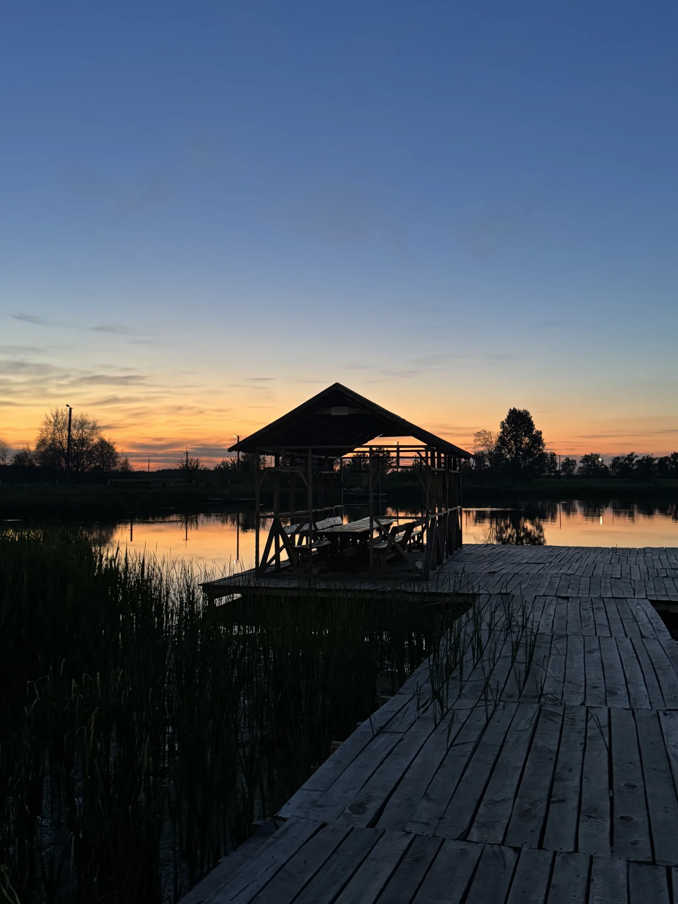
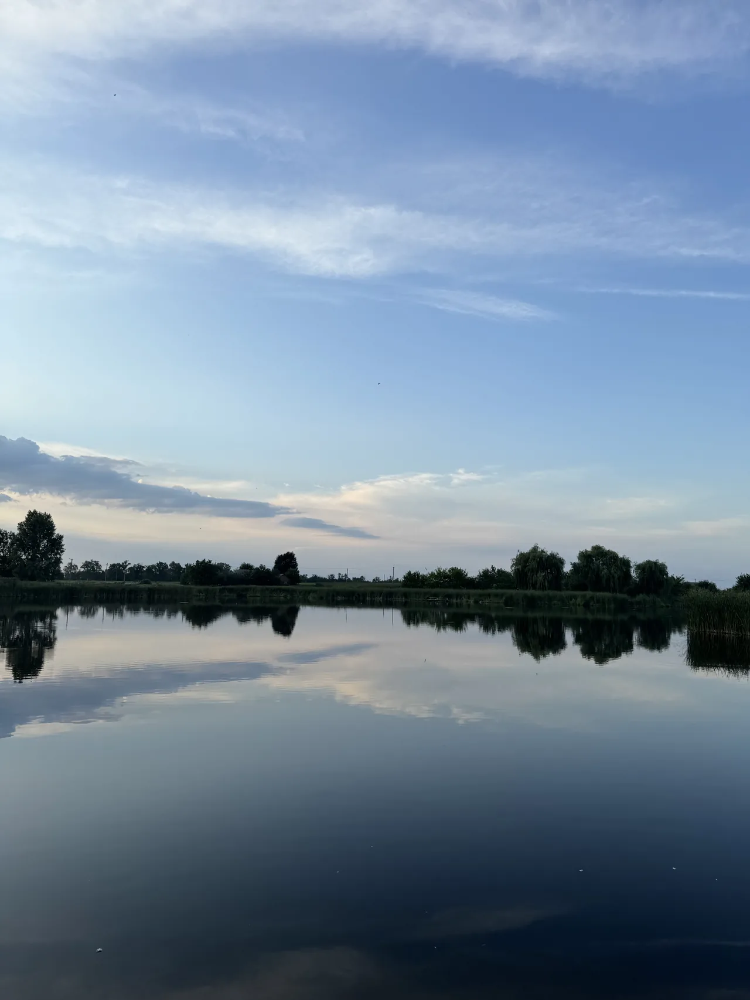
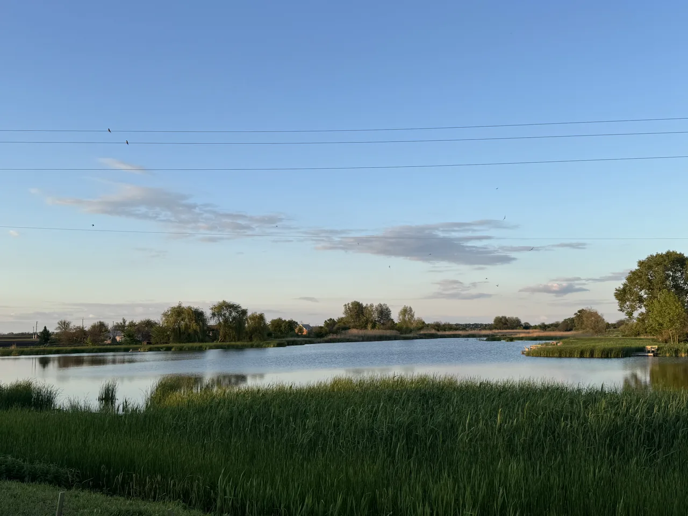
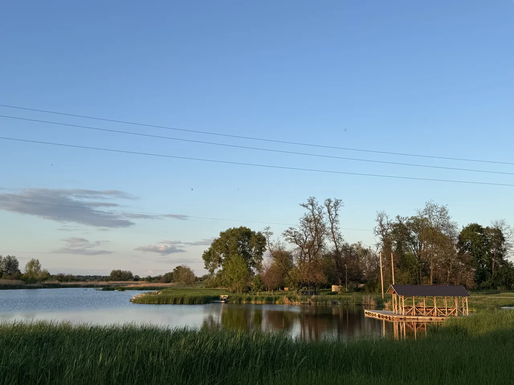
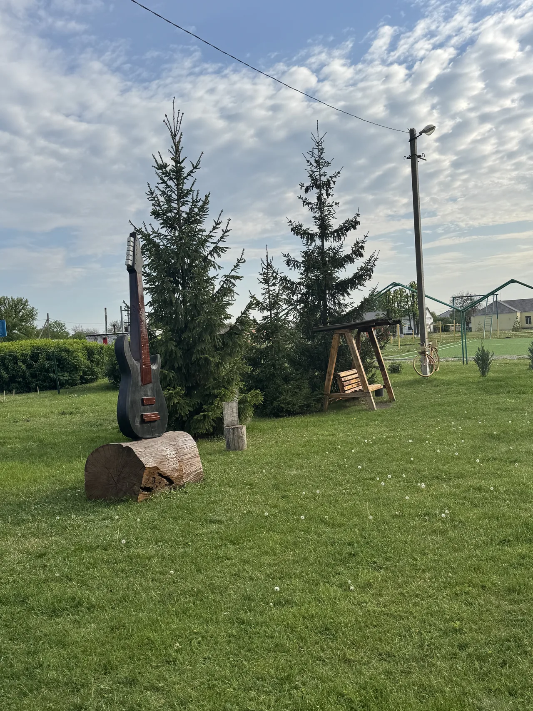
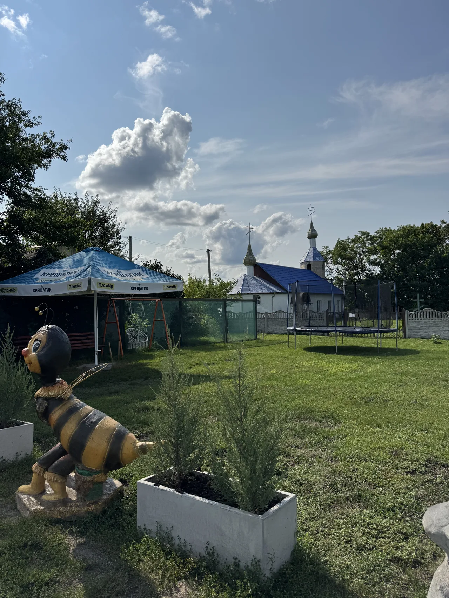

{{t.hero.title}}
{{t.about.chapter}}
{{t.about.title_l1}}
{{t.about.title_l2}}
{{t.about.lede}}
{{t.about.p1}}
{{t.about.p2}}

{{t.nature.chapter}}
{{t.nature.title_l1}}
{{t.nature.title_l2}}


{{t.history.chapter}}
{{t.history.title_l1}}
{{t.history.title_l2}}
-
{{t.history.y1}}
{{t.history.h1}}
{{t.history.p1}}
-
{{t.history.y2}}
{{t.history.h2}}
{{t.history.p2}}
-
{{t.history.y3}}
{{t.history.h3}}
{{t.history.p3}}
-
{{t.history.y4}}
{{t.history.h4}}
{{t.history.p4}}
-
{{t.history.y5}}
{{t.history.h5}}
{{t.history.p5}}

{{t.culture.chapter}}
{{t.culture.title_l1}}
{{t.culture.title_l2}}
{{t.culture.lede}}
{{t.culture.quote}}
{{t.life.chapter}}
{{t.life.title_l1}}
{{t.life.title_l2}}
-
01
{{t.life.i1_h}}
{{t.life.i1_p}}
{{t.life.i1_a}} -
02
{{t.life.i2_h}}
{{t.life.i2_p}}
-
03
{{t.life.i3_h}}
{{t.life.i3_p}}
{{t.life.i3_a}} -
04
{{t.life.i4_h}}
{{t.life.i4_p}}
-
05
{{t.life.i5_h}}
{{t.life.i5_p}}
{{t.life.i5_a}} -
06
{{t.life.i6_h}}
{{t.life.i6_p}}

{{t.gallery.chapter}}
{{t.gallery.title_l1}}
{{t.gallery.title_l2}}
{kind=link}
{kind=link}
{kind=link}
{kind=link}
{kind=link}
{kind=link}
{{t.events.chapter}}
{{t.events.title_l1}}
{{t.events.title_l2}}
{{ICS_LINK}}
{{t.contact.chapter}}
{{t.contact.title_l1}}
{{t.contact.title_l2}}
{{t.contact.h_geo}}
49.8217° N
34.7592° E
{{t.contact.h_neighbours}}
- {{t.contact.n1_name}}
- {{t.contact.n2_name}}
- {{t.contact.n3_name}}
{{t.contact.emails_h}}
{{t.contact.emails_lede}}
{{CONTACTS}}